Campaign - PROM Update for Misfire DTC's/Runs Rough
Group: 01Number: 05-15
Date: Dec.19, 2005
Subject:
Update Programming to Eliminate Possible Engine Stumble or Rough Running Condition (OD)
Model(s):
Touareg 3.2L V6 (Eng. code BAA, BMX) 2004 --> 2005
Tip:
This Technical Bulletin is in effect for 12 months from date of publication as listed above. After that date, this Technical Bulletin will expire and no longer be in effect.
Condition
Update programming required to eliminate possible engine stumble after warm restart and/or cold start, engine runs rough, DTCs P0300, P0301, P0302, P0303, P0304, P0305 or P0306 may be stored.
May be caused by Software issue with Engine Control Module Part No.: 022 906 032BF/FT.
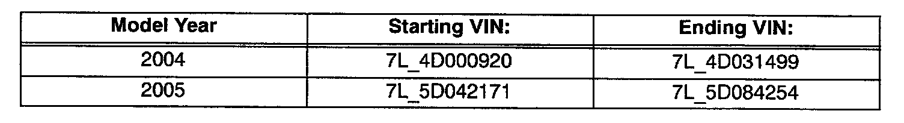
Production
Service Requirements:
Vehicle must meet ALL of the following criteria.
1 - Procedure is valid only for vehicles that show the OD code in the OTIS View Campaign inquiry screen on the day of repair.
2 - Vehicle must be within the Limited New Vehicle Warranty.
3 - Procedure must be performed within the allotted time frame stated in this Technical Bulletin.
Tip:
Procedure must also be performed on applicable vehicles in Dealer inventory
Part numbers listed in this T.B. are for reference only Always check with your Parts Dept for the latest parts information.
Procedure:
Update - Programming (Flashing)
Tip:
When performing the reflash procedure, ALL DTCs for all systems are erased. DTCs linked to Guided Fault Finding function tests will be lost. Therefore, always address stored DTCs for Customer concerns unrelated to the reflash procedure first.
The following "Update - Programming" (flashing) process may overwrite any "TUNED" ECM programming. A "TUNED" ECM is described as any ECM altered so as to perform outside the normal parameters and specifications approved by Volkswagen of America, Inc.
If you encounter a vehicle with a "Tuned" ECM, prior to performing the "Update - Programming" (flashing) procedure:
^ Your Dealership should place the vehicle owner on notice in writing, that their ECM was found to have been tuned, and that any damage caused by the tuning of the ECM (including any adverse emissions consequences) will not be covered by Volkswagen of America, Inc. warranties.
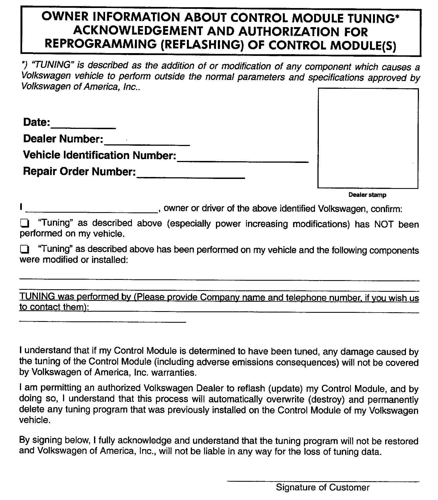
^ For any repair requested by the owner under warranty or outside warranty that requires flashing, which will automatically wipe out the "Tuning" program, your Dealership should advise the owner of the above and get Owner's written consent (see Control Module Tuning form) to the flashing procedure.
Tool requirements
^ VAS 5051 or 5052 (with Basis CD V.08.00.00 and the Brand CD V.08.64.01 or higher) with old diagnosis logs erased prior to start.
^ "Update - Programming" (flashing) CD W42TOUAREGCSMF
Tip:
Additional copies of the "Update - Programming" CD (Literature Number W42TOUAREGCSMF) may be ordered from the Volkswagen Technical Literature Ordering Center or by calling.
Vehicle requirements
^ Battery MUST have minimum no-load charge of 12.5V (failure to maintain voltage during update process can lead to ECM failure) (you must use an approved battery charger to maintain battery voltage).
^ VAS 5051: connected to vehicle and to 110V AC Power supply at all times during procedure.
^ VAS 5052: connected to vehicle with battery voltage requirements met.
^ Any appliances with high electromagnetic radiation (i.e. mobile phones) switched OFF.
^ No Stored DTC's, erase any stored DTCs.
Tip:
Non-observance of the following points may lead to ECM failure! VAS 5051 or 5052 must always be connected to the approved power supply at the approved voltages. Under no circumstances should the power supply be interrupted or the diagnostic connector unplugged during the flash procedure.Any appliances with high electromagnetic radiation (i.e. mobile phones) must be switched OFF
"Update - Programming" (flashing) procedure, checking for update match
- Switch ignition ON.
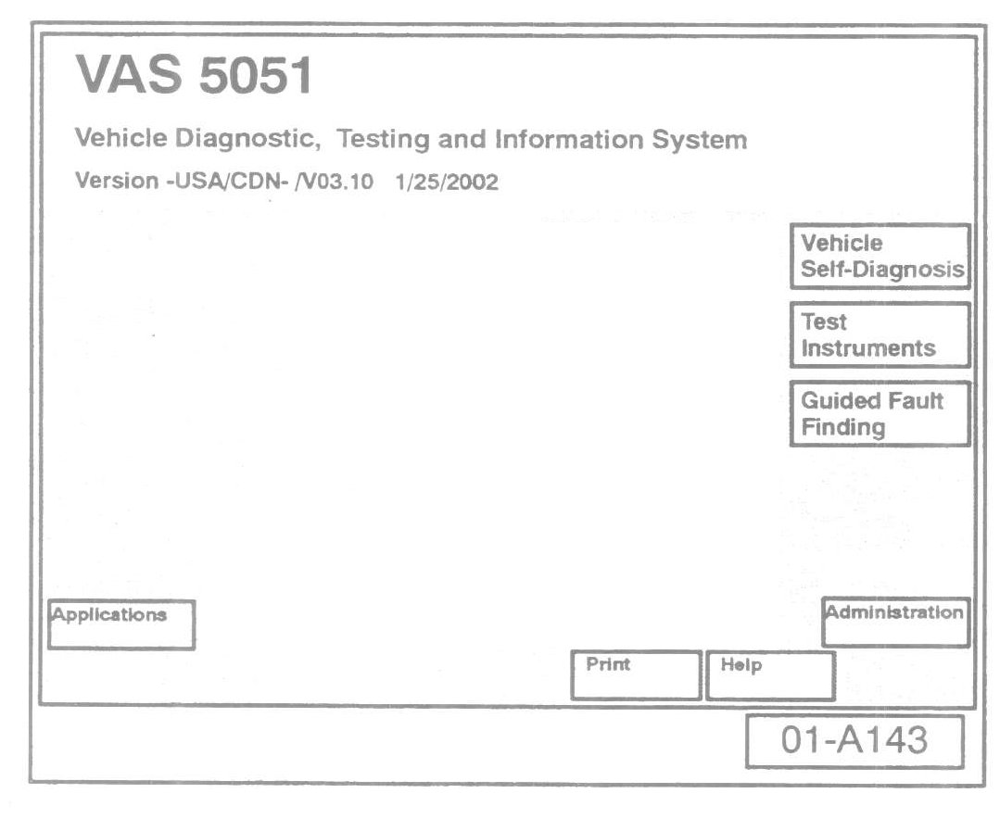
- Switch VAS 5051/5052 ON and insert flash CD into CD drive as soon as start screen appears.
Tip:
You must return to the start screen before starting a new (flashing) session, otherwise the flashing CD will not be recognized by the tester.
- Select "Vehicle Self Diagnosis" mode.
- Select vehicle system "01-Engine electronics".
^ Program checks software level.
If software level of ECM MATCHES level indicated by Flashing CD:
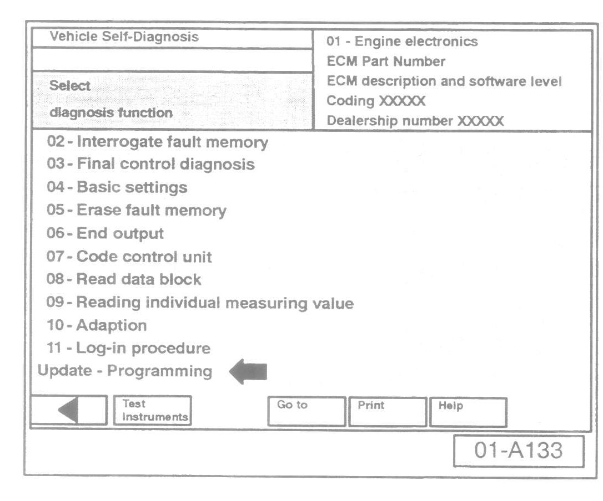
^ "Update - Programming" (arrow) will not appear.
Tip:
The "Update - Programming" function is only available when the inserted flashing CD level and current vehicle ECM level are different.
If "Update - Programming" does not appear:
- Programming (flashing ECM) cannot be performed. Do Not attempt to update. Go to page 11 and close campaign using appropriate code.
If software level DOES NOT match the level indicated on Flashing CD:
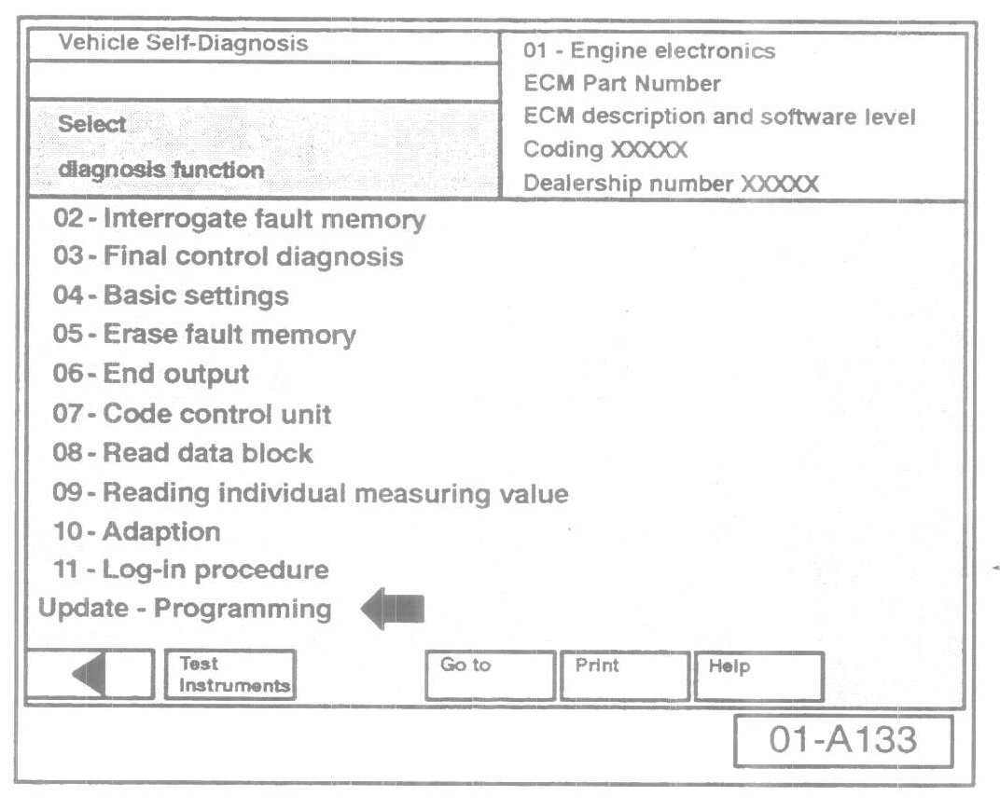
^ "Update - Programming" (arrow) appears.
PRIOR to performing procedure to "Update - Programming" (flash) the ECM:
^ ALL fault memories must be interrogated and erased.
Tip:
Failure to erase ALL fault memories may cause "Update - Programming" (flashing) procedure to fail!
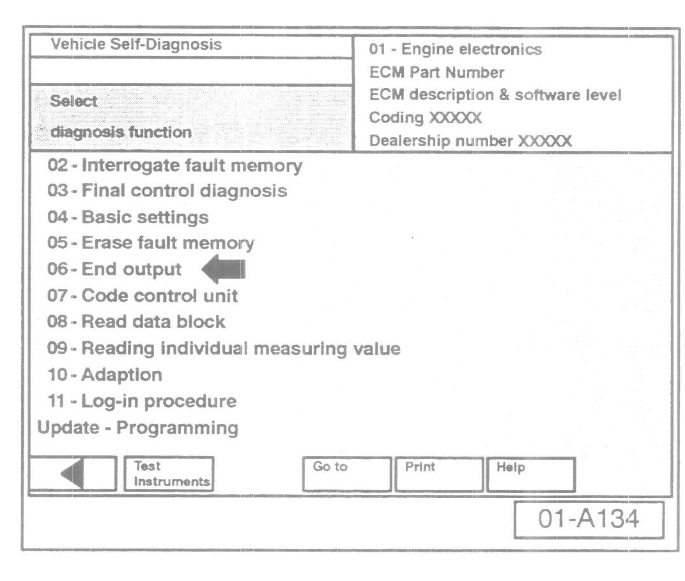
- Select Diagnosis function 06 "End output".
- Select Diagnosis function 00 "Collection services".
- Select "Check DTC memory - complete system". which will interrogate all fault memories.
- Erase ALL fault memories.
Once ALL fault memories have been erased:
- Select vehicle system "01-Engine electronics".
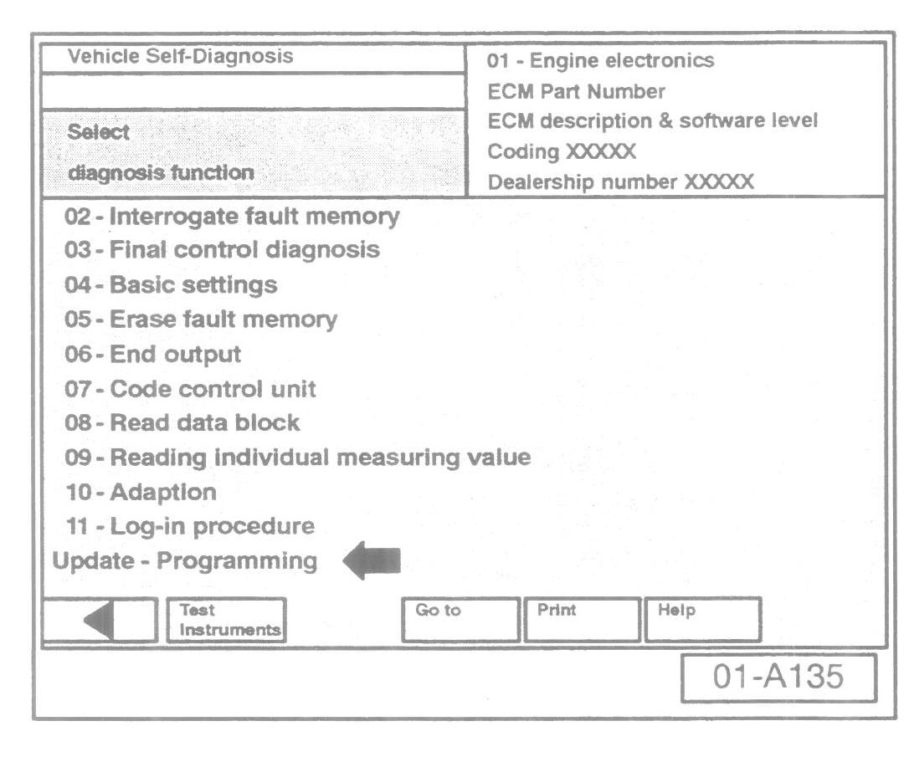
- Select "Update - Programming" option at bottom of screen (arrow).
Note:
Once "Update - Programming" function has been started, switching ignition OFF or disconnecting the diagnostic connector may completely destroy the ECM.
"Update - Programming" (flashing), performing
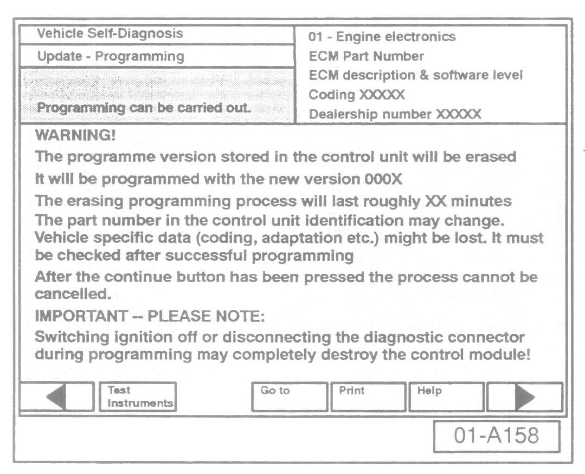
After selecting "Update - Programming" function, new program version as listed below will install:
^ Model year 2004, 022 906 032BF_6742
^ Model year 2005, 022 906 032FT_6618
- By selecting the right arrow button, the programming procedure begins.
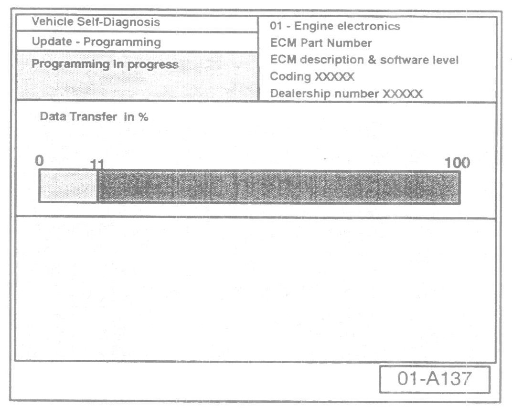
Similar screen appears:
The previous data in the ECM is erased and the new data is being transferred to the module from the flash CD.
Tip:
Approximate flashing time is 30 minutes.
Tip:
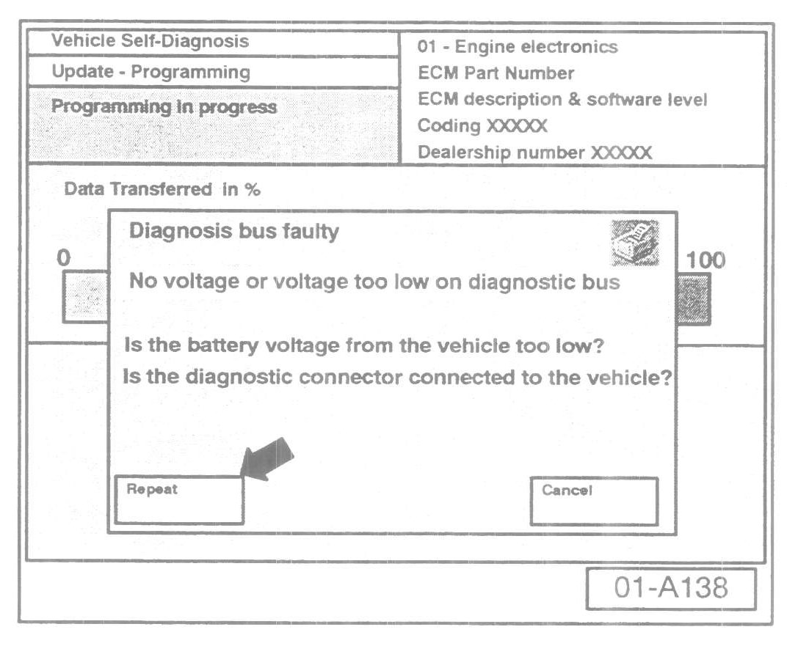
If during the "Update - Programming"; a fault message is displayed:
- Confirm that VAS 5051 or VAS 5052 diagnostic tool power supply is adequate and that ALL appliances with high electromagnetic radiation (i.e. mobile phones) are switched OFF.
- The "Update - Programming" (flashing) process must then be started from the beginning using the "Repeat" button (arrow). DO NOT use the "Cancel" button.
Note:
On NO occasion should the "Cancel" button be selected.
Once "Update - Programming" (flashing) is complete:
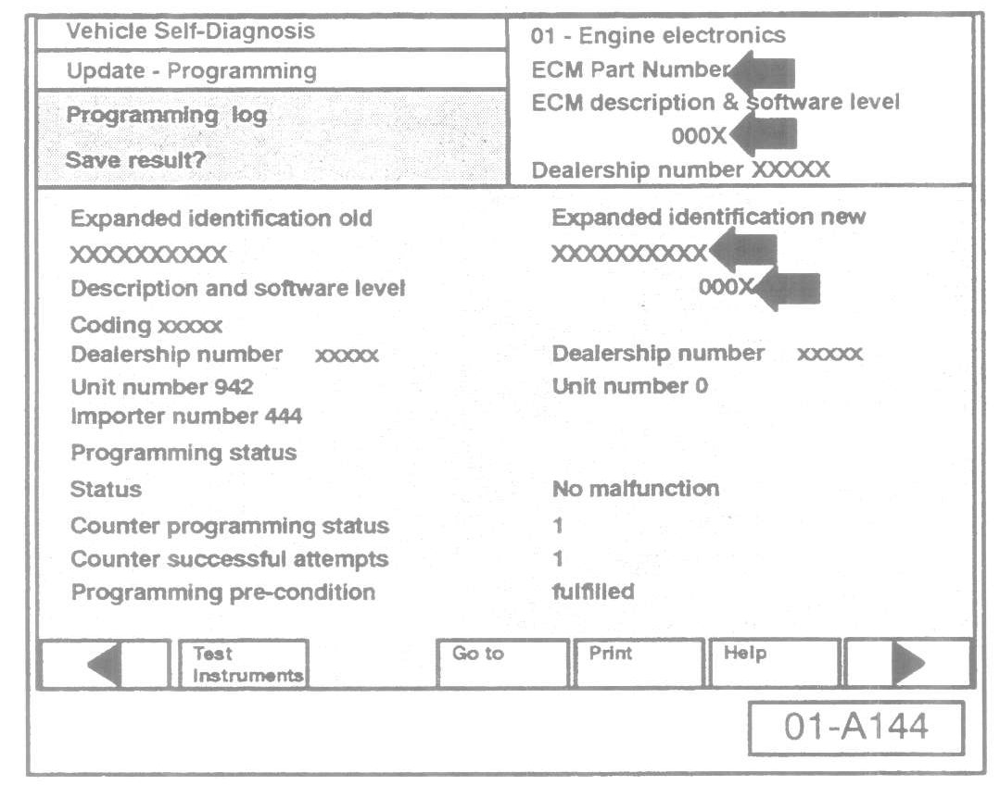
^ Similar screen appears.
Tip:
^ ECM Part Number and old software level is still displayed at (arrows).
New software level is not displayed until process is complete and fault memories have been erased.
- Select the "Print", then "Screen" button.
- Attach print to vehicle Repair Order.
Once "Update - Programming" (flashing) is complete, the control module must be re-initialized.
- Select the right arrow button.
^ The tester requests you to switch the ignition OFF.
- Switch ignition OFF
^ The tester requests you to switch the ignition ON.
- Switch ignition ON when prompted. After switching ignition ON, the ECM has been re-initialized, however, fault memories must now be erased.
- Select the "Continue button"
Fault memories, erasing after "Update - Programming" (flashing)
Due to the CAN bus system, fault messages will be stored in various Control Modules during programming.
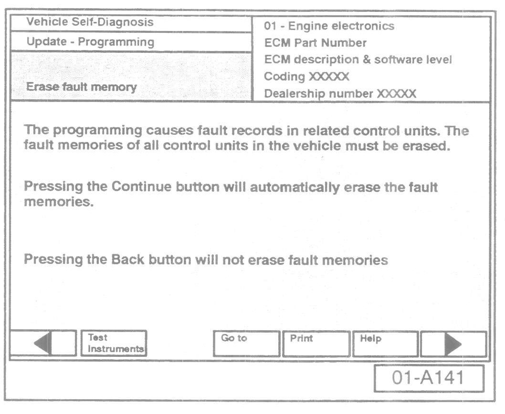
To erase ALL fault memories:
- Confirm by selecting the right arrow button.
Once fault memories have been erased:
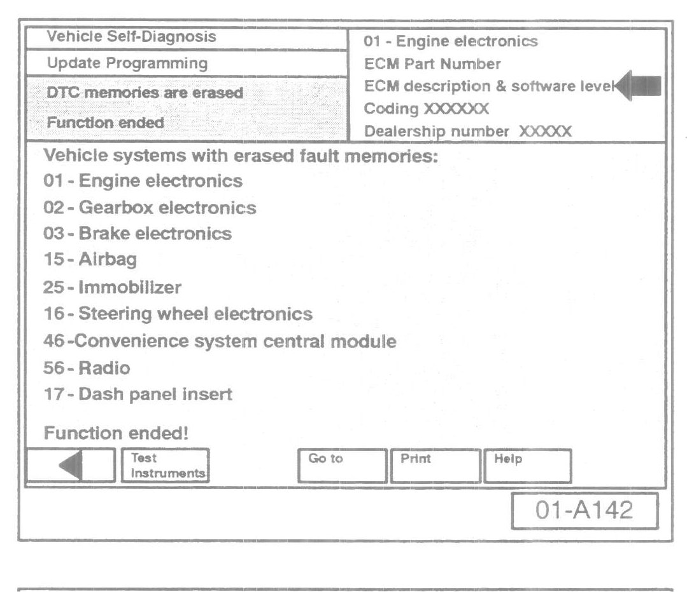
^ Similar screen appears.
^ Old ECM Part No. and software level still appear at (arrow).
^ Function ended appears at bottom of screen.
- Finish update of the ECM by selecting the left arrow button.
^ Similar screen appears.
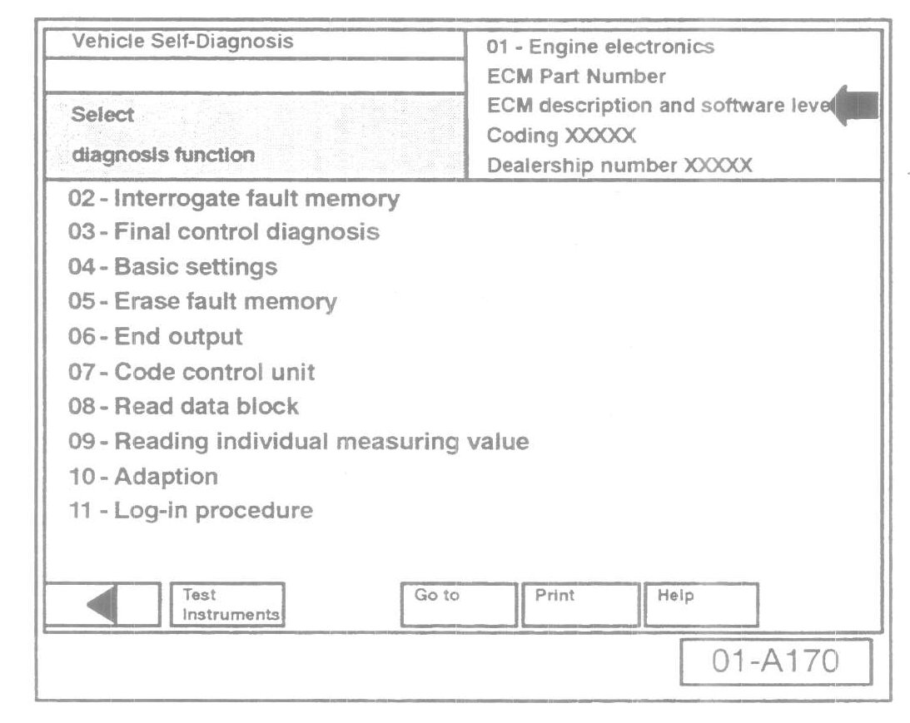
Updated software level will appear at arrow.
^ Model year 2004, 022 906 032BF_6742
^ Model year 2005, 022 906 032FT_6618
^ Flash CD can now be removed from VAS 5051 or VAS 5052 Diagnostic tool.
- Print the ECM screen to verify ECM update software level.
^ VAS 5052 will hold the print until process is complete and then you may take the tester to the printer for printing the screen.
- Attach print to vehicle Repair Order.
- Select "Go to" then select "Exit".
Tip:
It is not generally necessary to encode the ECM following the "update - Programming" (flashing procedure. However, you must set the readiness code.
- Set readiness code.
Use VAS 5051 or VAS 5052 to set readiness code.
Required Vehicle Update Technical Bulletin Time Requirements/Reimbursement
To ensure prompt and proper payment, be sure to enter, immediately upon completion of the repair work, the applicable reimbursement code listed below.
Claims will only be paid for vehicles that show the OD code in the OTIS View Campaign inquiry screen on the day of repair.
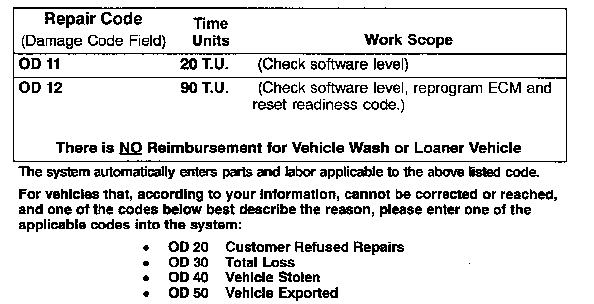
OD Data Entry Procedure Use Claim Type RC
Additional Required Vehicle Update Technical Bulletins
Some of the affected vehicles may be involved in additional Required Vehicle Update Technical Bulletins. Please check your OTIS View Campaign inquiry screen so that any additional required work can be done simultaneously.
Required Vehicle Update Technical Bulletin Verification
For verification, always check the OTIS View Campaign inquiry screen. The OTIS system is the only binding inquiry and verification system; other systems are not valid and may result in non-payment of a claim.
Help for Claim Input
For questions regarding claim input, contact your appropriate Warranty Claim specialist.
Please do not contact the Campaign Helpline regarding claim input.
Required Customer Notification
Inform your customer in writing by recording on the Repair Order any and all work that was conducted on the vehicle, including any and all updates completed under this Technical Bulletin.